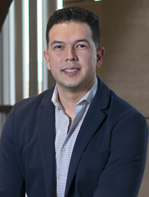

Odont. Alberto
Vázquez Zavala

La revolución en el consultorio
Acortar los procesos y poder visualizar el resultado final antes inclusive de iniciar un tratamiento son sólo algunas de las ventajas de la odontología digital, conozca la perspectiva del doctor Alberto Vázquez Zavala
Redacción BS
edicionrevistabs@gmail.com
Considerados como odontología Premium, los procedimientos realizados con técnicas de odontología digital son punta de lanza en la salud bucal, Alberto Vázquez Zavala habló sobre estas técnicas en entrevista con Revista BS.
“Algunas de las aportaciones positivas que ofrece la odontología digital a los pacientes es su comodidad en cuanto a las impresiones o moldes de su boca, rapidez en la fabricación de coronas, puentes, eficacia y seguridad que se traducen en tratamientos de éxito a largo plazo”, comentó el especialista en rehabilitación oral e implantología.
Este tipo de odontología permite excelentes resultados, destacó, especialmente en la colocación de prótesis definitivas, implantes, carillas o prótesis total.
“Hablando de implantes, realizamos la planeación para su colocación mediante un escaneo intraoral, en vez de tomar moldes, y una tomografía computarizada para compilar en un clon digital del paciente, con esta información realizamos tratamientos como cirugía guiada y Full Arch”, detalló Vázquez Zavala. “Lo más seguro, cómodo y sin cortes en su encía, como lo sería una colocación tradicional de implantes”.
El especialista comentó que con estas técnicas se tiene el potencial de realizar una corona en una sola consulta, gracias a la fabricación asistida por computadora de prótesis definitiva.
Al igual que muchas otras profesiones e, inclusive, actividades de la vida cotidiana, como ver películas o transportarse, la odontología es una de las áreas que las nuevas tecnologías ha revolucionado, el experto comentó cómo es practicar la odontología hoy.
“Utilizar odontología digital para crear cada sonrisa en nuestros pacientes se vuelve una experiencia cómoda, agradable y predecible, pues podemos observar los resultados finales antes de comenzar. Es una de sus tantas ventajas”, subrayó.
Importancia de restaurar
Entendiendo la boca como un sistema, es de suma importancia restaurar piezas dentales faltantes o dañadas y así evitar sus complicaciones como que los dientes vecinos se inclinen o se separen, desgaste prematuro en otras piezas dentales, entre otros problemas.
Como recomendación final, el entrevistado invitó a acercarse a profesionales acreditados para obtener resultados seguros y satisfactorios.
“Al tratarse de la salud bucal siempre hay que informarse, indagar en la selección de su dentista, corroborar cédulas de especialidad. Es la mejor manera de ponernos en las manos correctas con total plenitud y seguridad de que todo trabajo realizado es confiable”, finalizó.